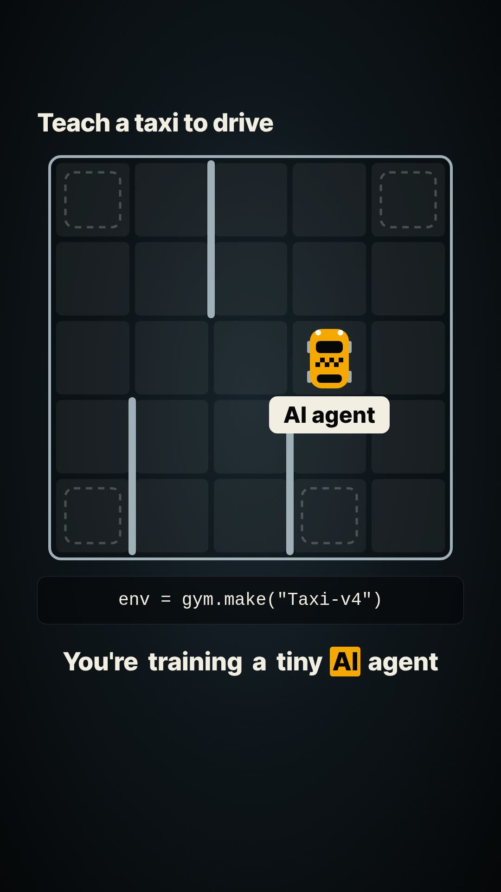
1 · 1.6 s
training a tiny AI agent to act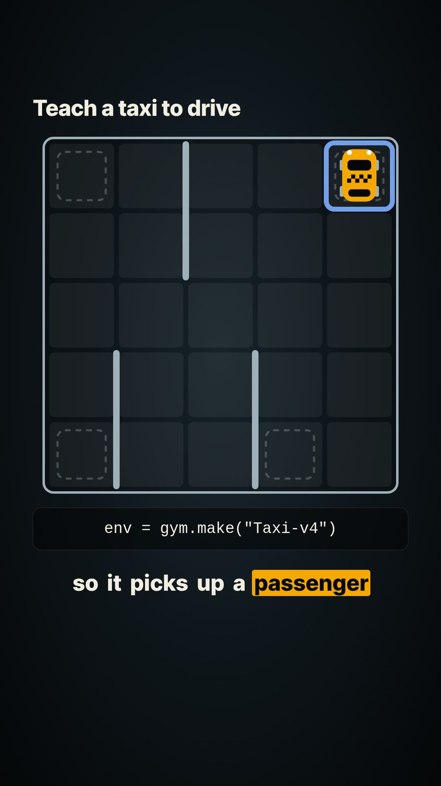
2 · 4.8 s
it picks up a passenger and drops them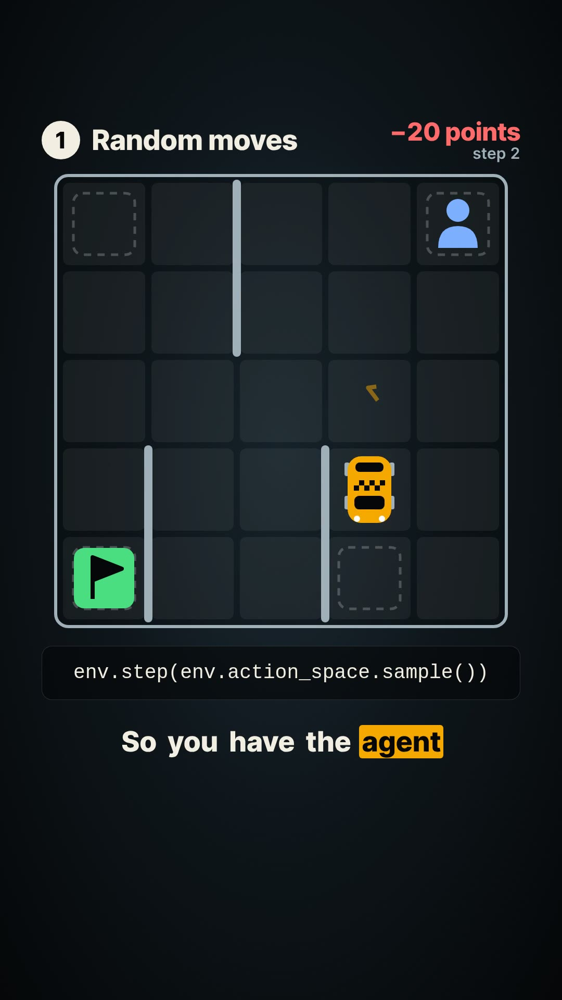
3 · 8.0 s
location. So you have the agent move around randomly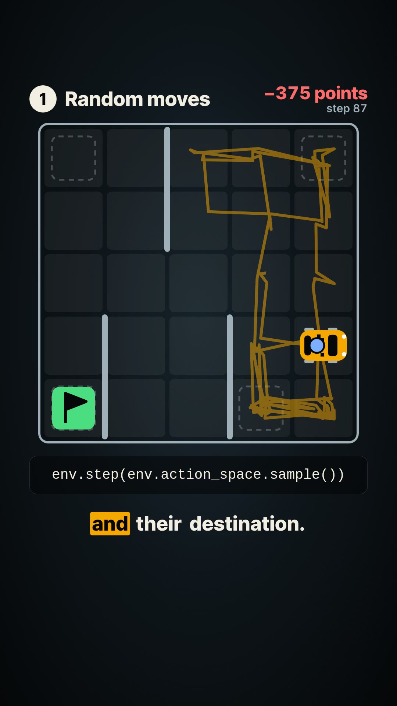
4 · 11.2 s
finds the passenger and their destination.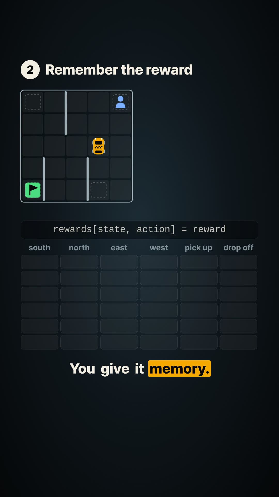
5 · 14.5 s
time. You give it memory. Every move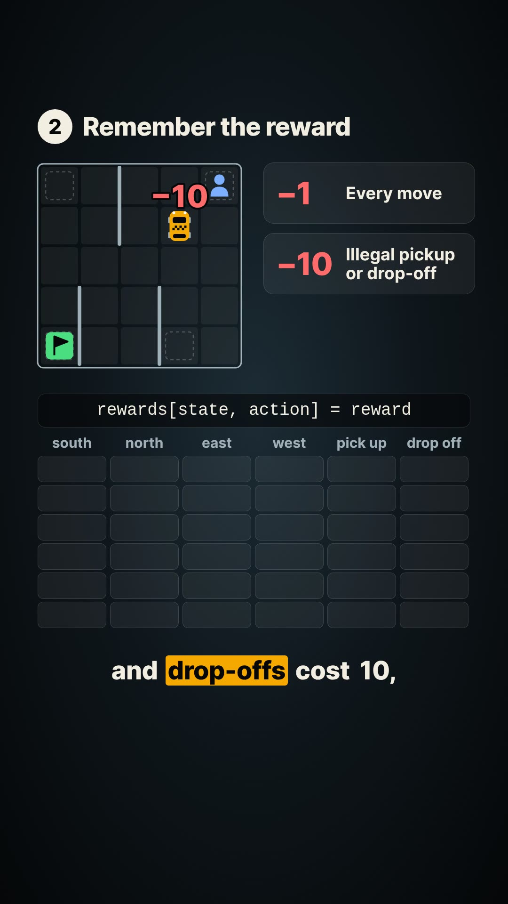
6 · 17.7 s
illegal pickups and drop-offs cost 10,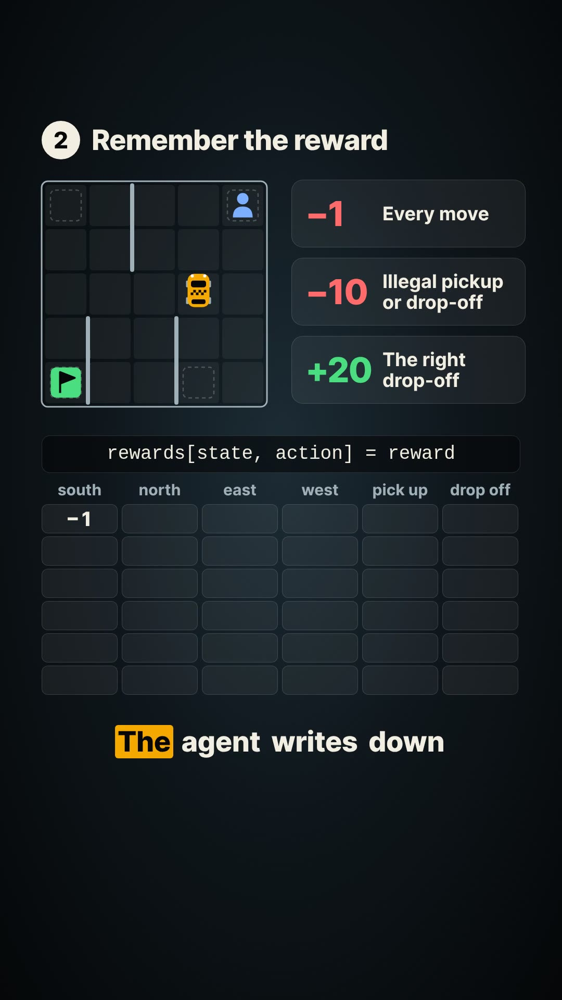
7 · 20.9 s
earns 20. The agent writes down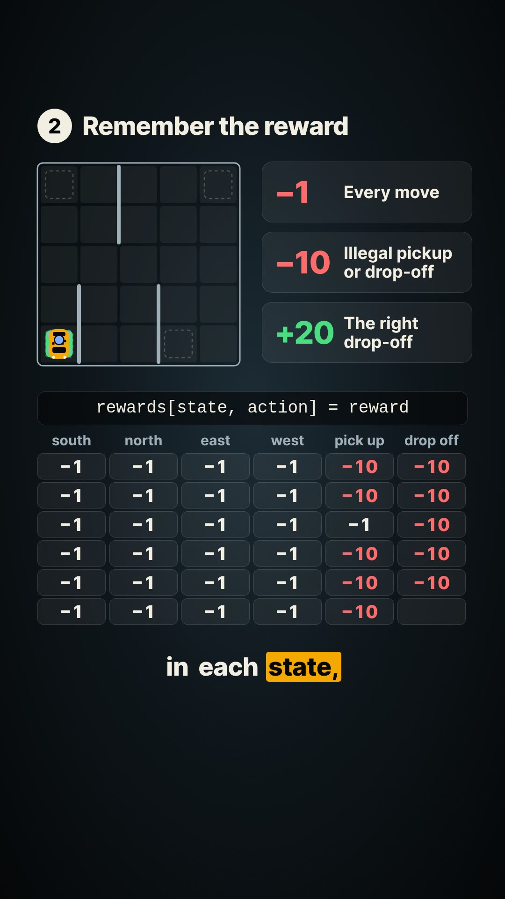
8 · 24.1 s
earned in each state, then picks the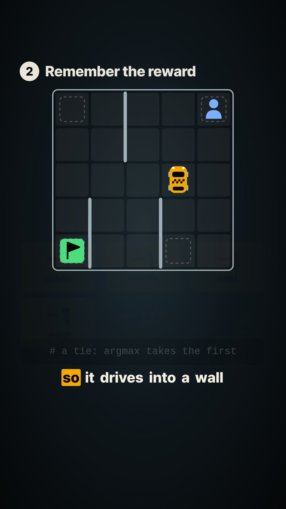
9 · 27.3 s
costs the same, so it drives into a wall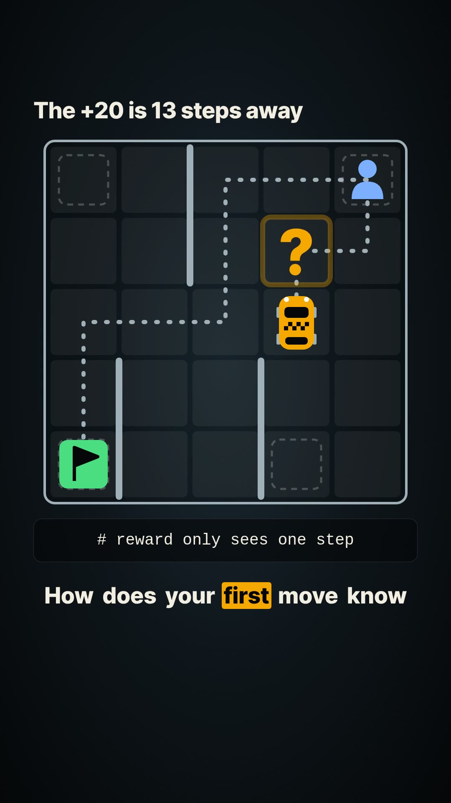
10 · 30.5 s
How does your first move know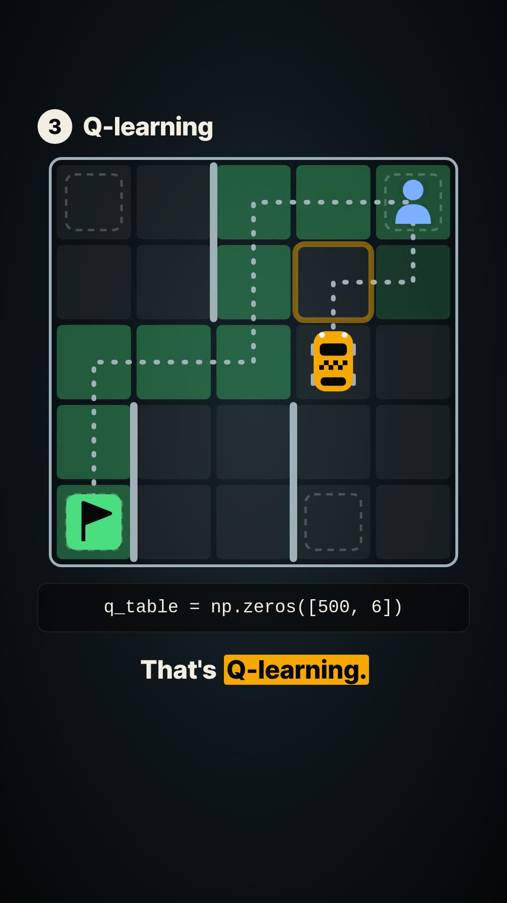
11 · 33.7 s
end? That's Q-learning. Each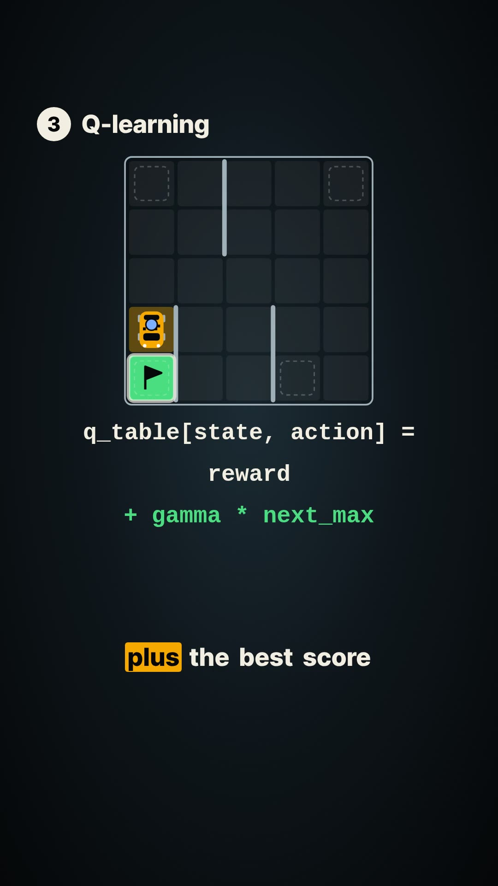
12 · 36.9 s
its reward plus the best score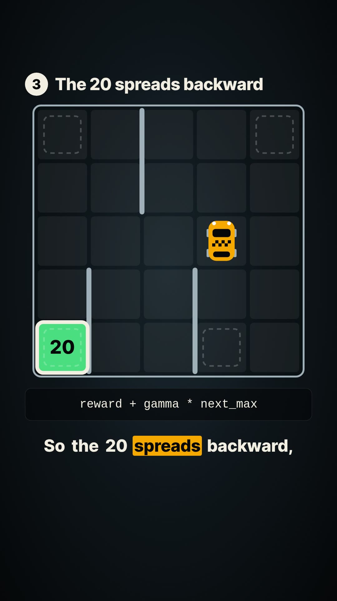
13 · 40.2 s
So the 20 spreads backward one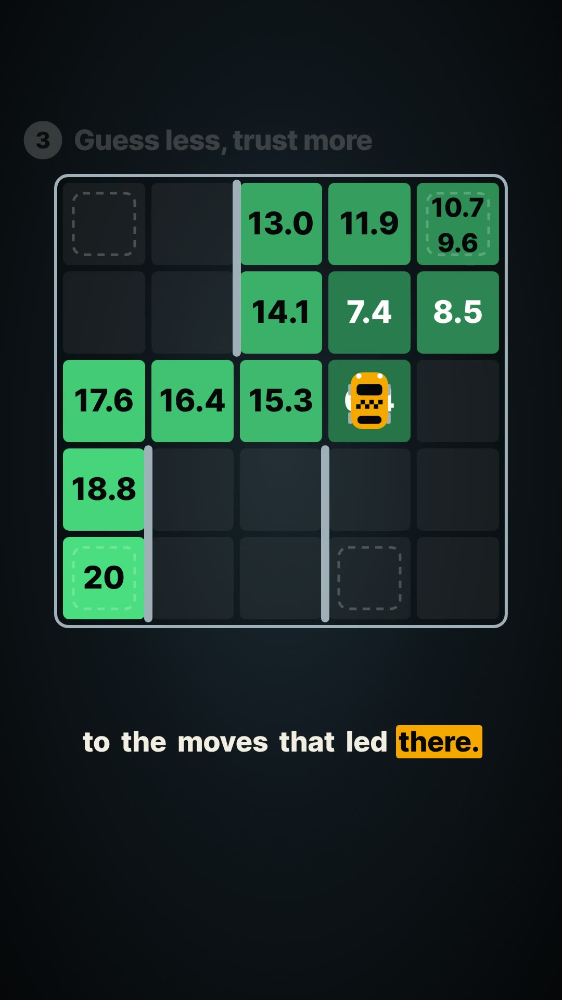
14 · 43.4 s
moves that led there. At first it guesses,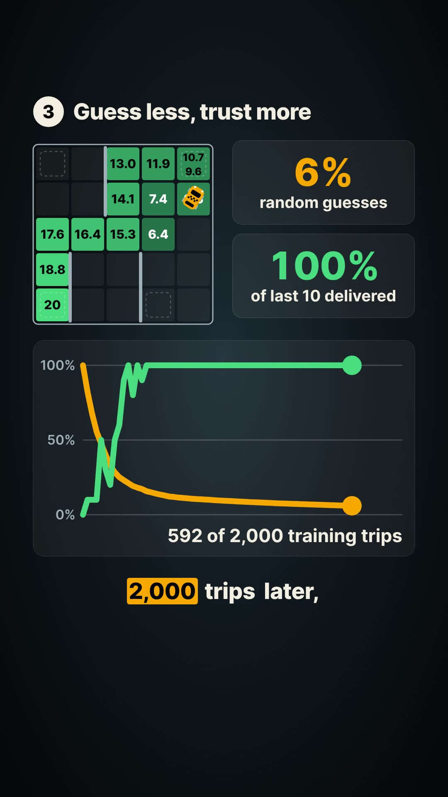
15 · 46.6 s
trusts the table. 2,000 trips later,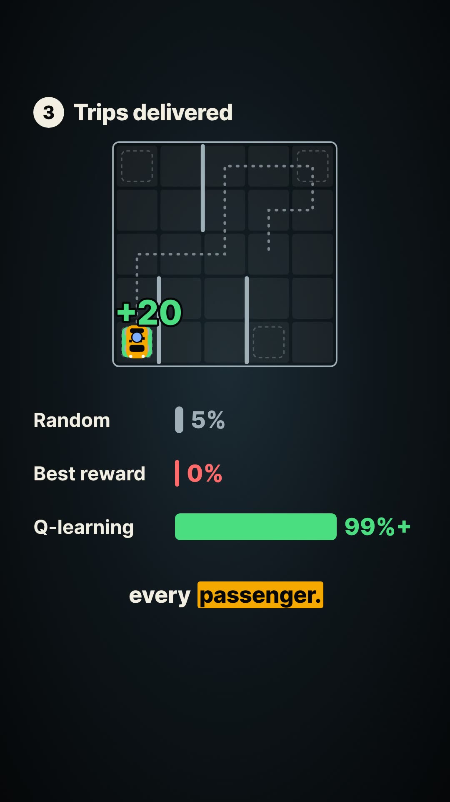
16 · 49.8 s
almost every passenger.